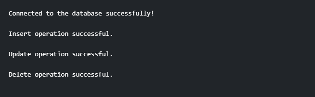

Write a Java program to throw the SQL Query, insert, delete, update, if not successful then throw an exception
Code:-
import java.sql.Connection;
import java.sql.DriverManager;
import java.sql.SQLException;
import java.sql.Statement;
public class SQLOperationsExample {
public static void main(String[] args) {
try {
// Provide the appropriate driver class name
String driver = "com.mysql.cj.jdbc.Driver";
// Provide the database URL, username, and password
String jdbcUrl = "jdbc:mysql://localhost:3306/your_database";
String username = "your_username";
String password = "your_password";
// Load the JDBC driver
loadDriver(driver);
// Connect to the database
Connection connection = DriverManager.getConnection(jdbcUrl, username, password);
System.out.println("Connected to the database successfully!");
// Perform SQL operations
executeInsert(connection);
executeUpdate(connection);
executeDelete(connection);
// Close the connection when done
connection.close();
} catch (SQLException | DatabaseConnectionException e) {
System.out.println("Error: " + e.getMessage());
}
}
private static void loadDriver(String driver) throws DatabaseConnectionException {
try {
Class.forName(driver);
} catch (ClassNotFoundException e) {
throw new DatabaseConnectionException("Failed to load JDBC driver: " + e.getMessage());
}
}
private static void executeInsert(Connection connection) throws SQLException {
try (Statement statement = connection.createStatement()) {
// Example insert query
String insertQuery = "INSERT INTO your_table (column1, column2) VALUES ('value1', 'value2')";
statement.executeUpdate(insertQuery);
System.out.println("Insert operation successful.");
} catch (SQLException e) {
throw new SQLException("Error executing insert query: " + e.getMessage());
}
}
private static void executeUpdate(Connection connection) throws SQLException {
try (Statement statement = connection.createStatement()) {
// Example update query
String updateQuery = "UPDATE your_table SET column1 = 'new_value' WHERE condition";
statement.executeUpdate(updateQuery);
System.out.println("Update operation successful.");
} catch (SQLException e) {
throw new SQLException("Error executing update query: " + e.getMessage());
}
}
private static void executeDelete(Connection connection) throws SQLException {
try (Statement statement = connection.createStatement()) {
// Example delete query
String deleteQuery = "DELETE FROM your_table WHERE condition";
statement.executeUpdate(deleteQuery);
System.out.println("Delete operation successful.");
} catch (SQLException e) {
throw new SQLException("Error executing delete query: " + e.getMessage());
}
}
}
class DatabaseConnectionException extends Exception {
public DatabaseConnectionException(String message) {
super(message);
}
}
Output:-
